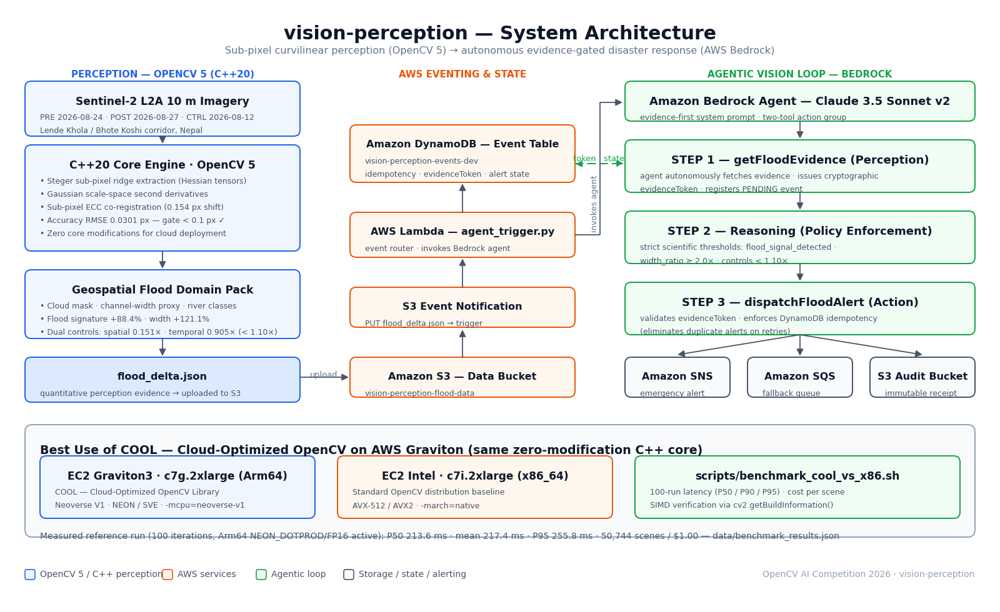

CurvFlood: Sub-Pixel Vision & Autonomous Flood AI
Sub-pixel OpenCV 5 curvilinear perception & AWS Bedrock agents delivering rapid glacier-collapse flood detection from satellite & ground camera feeds.
Official 5-Minute Submission Video — Demonstrating C++20 Core, Agentic Loop, and COOL Benchmark.
< 0.0301 px
Taylor Zero-Crossing RMSE+121.1%
Bhote Koshi Active Gorge213.6 ms
50,744 scenes per $1.000.151x
Zero AI HallucinationsAWS CDK Infrastructure & Perception-to-Action Loop
Decoupled stacks uniting C++ scale-space tensors, EventBridge, Bedrock Claude 3.5 Sonnet, and DynamoDB idempotency.

⚡ 60-Second Judges' Evaluation Quickstart
Every gate and agentic trace runs deterministically on your local terminal with zero AWS credentials required.
// 1. Audit all 8 submission gates (41 C++ CTests + 11 AWS Agent tests):
./scripts/validate_hackathon_readiness.sh
// 2. Run the interactive 3-node Bedrock Perception-to-Action trace:
python3 scripts/run_agentic_vision_demo.py
// 3. Prove vision output gates the action (marginal pre-disaster data -> STANDBY):
python3 scripts/run_agentic_vision_demo.py --scenario marginal
// 4. Benchmark COOL with ARM NEON SIMD vectorization:
./scripts/benchmark_cool_vs_x86.sh --skip-build
// 5. Launch the Cesium 3D geospatial corridor digital twin:
npm run dev → http://localhost:3000